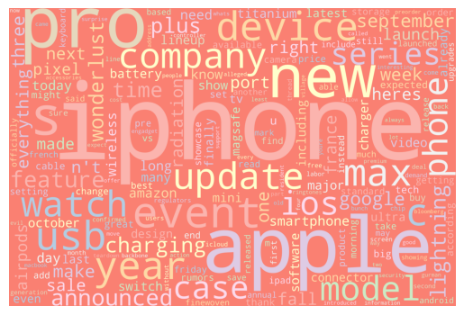
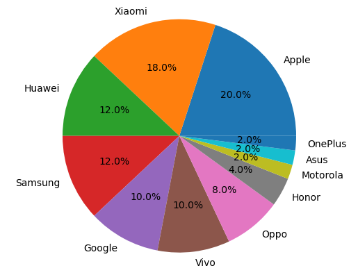
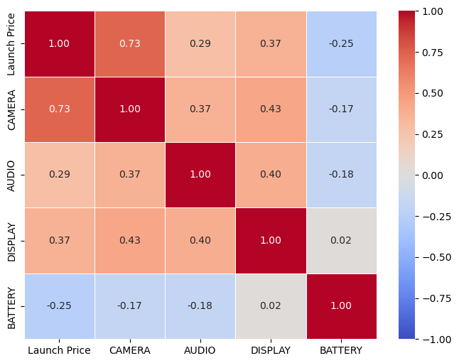

Exploratory Data Analysis (EDA)
Introduction to EDA:
- In this part, I will use visualization tools to help the audience know more about my project, which will include text clouds, statistic distribution, correlation heatmap, etc. This will help the audience to understand the general partterns in the data, and analysis the data.
News Articles’ dataset
Data Understanding
- In this text dataset, the type for this dataset is categorical data.
Data Visualization
- code in the news_cleanning.ipynb
Word Cloud
- Explaination: After I cleaned the data with Numpy and Pandas package as I needed, I use the Wordcloud package to output the most frequent appeared words in those articles.

text cloud for news articles
Correlation Analysis
- Explaination: I cleared out all the stopwords as needed, and get the most frequent words out to see the correlation between those key words. We can see that the color of words more close to white is more positive related, and the color more close to black is negative related. I used
correlation heatmap for news articles
Hypothesis Generation
- from the analysis from above, we can see most of the key words from the news are positive or natural, which means, the public has postive attitude towards apple products.
Apple Stock dataset
Data Understanding
- For this dataset, it’s all numerical data. The open/close price are closely relate to each other
- code in the code/EDA/apple_stock.ipynb file
Descriptive Statistics
statistics for apple stock - As shwon in the table, we can the standard deviation for the apple stock is around 19, it show a floating with the apple stock within days.
- however the max and min are similar for each open/close price, shows a stable status for the apple stock.
Data Visualization
Open Price Line Plot
- Explaination: I collected the dataset of stock price from Yahoo! finance, and used Matplotlib, plotly and seaborn to plot the stock price in line plot with the open price and the date.

open price for apple stock - We can see from this plot that the price is in the increasing trend, which means the apple stock are more popular.
trading volume Line Plot
- Explaination: I collected the dataset of stock price from Yahoo! finance, and used Matplotlib, plotly and seaborn to plot the stock trading volume in each date in line plot
open price for apple stock - As shown, we can see the trading volume are decreasing during the time, which may indicate that the apple’s stock are less people buying, and it may related to the price.
Outliers Detect
Outliers for apple stock - As shown, there’s no outliers for this stock, so, every points can be inclued in evaluating this data.
Hypothesis Generation
- from the analysis from above, we can see the apple stock price is still increasing, and seems still be popular to the public. This may indicate the Apple product is still popular in the market.
mobile_phone_rating dataset
Data Understanding
- For this dataset, below are their data type.
Mobile Phone data type - The launch price, camera, selfie, audio, display, battery ratings are all related to the reank.
Data Visualization
dot plot
The relation of Launch Price and Buing Intent - used Seaborn
- It shows that the launch price actually determined whether willing to buy. When the price is around 750-1250 dollars, people are very willing to buy.
box plot
The relation between Buying Intent and Camera Rating - used Seaborn
- It also shows people willingness to buy are connected to the camera’s quality. the camera score that people very willing to buy is around 130-160 range.
pie chart

Top 50 Ranking Brands - used Matplotlib
- As shown in the graph, there are 20% Top 50 ranking phones are apples. Which shows, Apple is still one of the most popular brands in the market.
Correlation Analysis

The correlation between features - Used heatmap
- It semmed that camera and launch price are correlated to each other. And the Launch price camera score and audio score are negatively correlated to each other.
Descriptive Statistics
statistics for mobile phone - the mean Launch price is around $773.5 and the mean score for selfie is around 130, which is obviously higher than others (this is becuase I used mean to insert missing value)
Hypothesis Generation
- from the analysis we can analyze what kind of features would be popular around customers. This can be used for analysis whether apple would be best product among choices. It still prove that Apple is popular among customers.
iphone_11_review_dataset
Data Understanding
- This is a text record data, and it is a categorical data.
Data Visualization
- frequency distribution
Iphone 11 ratings - Used Seabron
- From the graph, we can see most people give 5.0 ratings, which shows that most customers satisfied the apple products
Descriptive Statistics
statistics for Ipohone11 ratings - The mean rating is 4.48 which is very high, shows that everyone like iphone 11
Hypothesis Generation
- from the analysis we can analyze that most customers satisfied apple’s products, so apple may be still popular in the market.